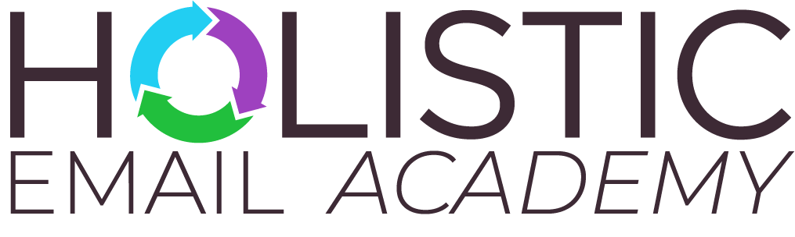

Score Your Email Programme Against Both Halves of the Room
Holistic Email Marketing Programme Maturity Assessment
Jonathan Pay · Holistic Email Academy
Holistic Email Academy · Email maturity workshop
01
The area of your programme that may be limiting progress.
02
What you’re unsure about, and who can help you find out.
03
One achievable step, an owner and a date to review it.
Your programme is the subject. Your individual result can stay private.
Holistic Email Academy · Email maturity workshop
Better judgement
Clearer strategy
Stronger working practices
The tool you own can’t tell the whole story of how you use it. We look across the programme: decisions, customer experience, technical foundations and what you learn.
THIS WORKSHOP
A starting point, not an audit.
A short self-assessment can’t establish the cause of every problem. The aim is a useful next step for your business, not a top score in every area.
Holistic Email Academy · Email maturity workshop
0–10 min
Purpose and model
10–30 min
Your assessment
30–35
Focus
35–45 min
Room patterns
45–53 min
Check and act
53–60 min
Take it back
On your own, at your own pace
Together, as a room
Holistic Email Academy · Email maturity workshop
01
Strategy & Governance
Programme priorities · Accountability · Review to action
02
Deliverability & Infrastructure
Permission · Sending eligibility and list hygiene · Technical stewardship · Inbox visibility
03
Customer Experience & Psychology
Customer understanding · Copy · Design · Accessibility
04
Testing & Learning
Test selection · Meaningful evaluation · Compounding learning
05
Personalisation & Lifecycle
Audience relevance · Lifecycle support · Communication coordination
Holistic Email Academy · Email maturity workshop
Ad Hoc
Foundational
Strategic
Optimised
Innovative
Your result is a profile across the five areas, not a decimal mark.
Holistic Email Academy · Email maturity workshop
01
For a complete profile, your lowest-scoring area sets the overall level.
02
Several areas can share the lowest level. Choose one for today.
03
“I don’t know” can leave an area unconfirmed. That isn’t Ad Hoc, or zero.
Your result may give a qualified level or a range. Read its wording as written.
Holistic Email Academy · Email maturity workshop
BEFORE YOU BEGIN
This is about how the programme works, not a judgement of your personal ability.
1
Include colleagues’ and agencies’ work where you can see how it’s done.
2
Not what’s planned, and not your best one-off example.
3
Where practice varies, choose the lower one you can consistently support.
4
Use it when you lack visibility. You don’t need to contact colleagues.
10–30 MINUTES · ON YOUR OWN
3
context questions
17
diagnostic questions
20
minutes
Ask whenever a question isn’t clear. You don’t have to share your scores.
jonathanpay.github.io/mon
10–30 MINUTES · ON YOUR OWN
3
context questions
17
diagnostic questions
20
minutes
Ask whenever a question isn’t clear. You don’t have to share your scores.
jonathanpay.github.io/tue
5 min · on your own
1
Name your lowest-scoring area and its level
2
Which answers in that area stand out, and why?
3
What do they suggest needs a closer look?
Choose one to work through today.
Note what you need to check first. Don’t invent a score.
Holistic Email Academy · Email maturity workshop
10 min · as a room
The spread across the five areas
Answers people couldn’t confirm
Possible explanations, not causes
Evidence that would help
Holistic Email Academy · Email maturity workshop
3 min · on your own
In your focus area, what don’t you know yet?
A recent campaign, a test record, a process or a report.
A colleague, an agency partner, or whoever owns that part of the programme.
Holistic Email Academy · Email maturity workshop
5 min · on your own or in pairs
Gather evidence, agree a process change, or try an improvement.
And what help or agreement they’ll need.
A date to look at what you found or changed.
Better visibility counts as progress too.
Holistic Email Academy · Email maturity workshop
2 min
YOU MIGHT SAY
The assessment suggests we should look at __________.
We need to check __________ with __________.
I suggest we start by __________.
We’ll review what we learn on __________.
Share the reasoning and the proposed action. Your score can stay yours.
Holistic Email Academy · Email maturity workshop
A focus for improvement
Evidence to check
An action to take forward
Holistic Email Academy courses can support this where one fits the gap. Your next action stays useful either way.
Smarter email starts with you